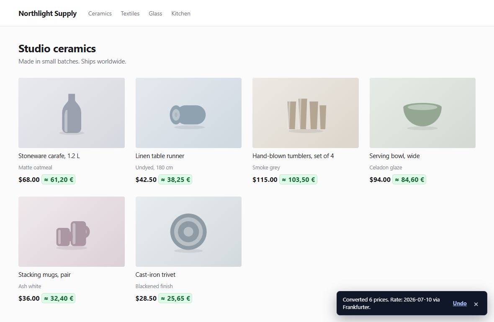

TWINPRICE FOYDALANISH QO‘LLANMASI
Chrome va Firefox’da sayt narxlarini qanday aylantirish mumkin
Twinprice — do‘kon sahifalaridagi narxlarni siz tanlagan valyutaga aylantiradigan bepul brauzer kengaytmasi. Uni o‘rnating, valyutalarni tanlang va Sahifadagi narxlarni aylantirish tugmasini bosing. Faqat bitta narx kerak bo‘lsa, uni valyutasi bilan birga belgilab, Tanlanganini aylantirish tugmasini bosing.
yangilangan
1. Twinprice’ni brauzeringizga o‘rnating
Chrome Web Store’dagi Twinprice sahifasini yoki Firefox Add-ons’dagi Twinprice sahifasini ochib, brauzeringizning o‘rnatish ko‘rsatmalariga amal qiling. Twinprice’da hisob ochish shart emas.
Oddiy do‘kon sahifasini oching. Brauzerning kengaytmalar menyusidan Twinprice’ni oching. Tezroq kirish uchun uni asboblar paneliga mahkamlang. Sahifaga kirish ruxsati kengaytmaga mos narxlarni topish va natijalarni ko‘rsatish imkonini beradi. Ruxsat va kurs so‘rovlari haqida maxfiylik siyosatini o‘qing.
2. Do‘kon sahifasidagi barcha narxlarni aylantiring
- Brauzerning asboblar panelidan Twinprice’ni oching.
- Asl valyuta bo‘limida valyutani avtomatik aniqlash uchun AUTO tanlovini qoldiring yoki valyutani o‘zingiz tanlang. Belgi noaniq bo‘lsa, to‘g‘ri valyutani qo‘lda tanlang.
- Natija valyutasi bo‘limida narxni qaysi valyutada ko‘rishni tanlang. Valyutani nomi yoki EUR, USD kabi kodi bo‘yicha qidiring.
- Sahifadagi narxlarni aylantirish tugmasini bosing. Konvertor o‘chirilgan bo‘lsa, tugmada Yoqish va sahifadagi narxlarni aylantirish deb yozilishi mumkin.
Twinprice mos narxni topganda sahifada chiqqan Narxlarni aylantirish tugmasini ham ishlatishingiz mumkin. Yonma-yon ko‘rinishda asl narx aylantirilgan narx yonida qoladi.

3. Belgilangan bitta narxni aylantiring
Avval Twinprice oynasida natija valyutasini tanlang. Keyin sahifada narxni valyuta belgisi yoki kodi bilan birga belgilang, masalan, USD 115.00. Belgilangan matn ostidagi ko‘k Tanlanganini aylantirish tugmasini bosing. Natija yashil oynachada chiqadi.
Belgilangan matn ustiga sichqonchaning o‘ng tugmasini bosib, Tanlangan narxni aylantirish bandini ham tanlashingiz mumkin. Brauzer menyusida bu band boshqa tilda chiqishi mumkin. Bu usul sahifaning qolgan qismiga tegmasdan bitta narxni aylantiradi.

4. Sevimli do‘kon sozlamalarini saqlang
Kengaytma oynasida Sahifa sozlamalari bo‘limini oching va Bu saytda avtomatik aylantirish bandini yoqing. Twinprice sayt uchun avtomatik konvertatsiyani, qo‘lda tanlangan asl valyutani yoki AUTO tanlovini eslab qoladi.
Narxlarni har bir saytda avtomatik aylantirish uchun Sahifa sozlamalari bo‘limida Barcha saytlarda avtomatik aylantirish bandini yoqing. Bandni o‘chirsangiz, u aylantirgan sahifalardagi asl narxlar tiklanadi.
Kengaytma oynasida aylantirilgan narxning rangi va shaklini tanlang. Uni asl narx yonida yoki uning o‘rnida ko‘rsatishingiz mumkin.
Twinprice brauzeringiz tiliga moslashadi. Boshqa tilni ishlatish uchun Sahifa sozlamalari bo‘limidagi Til ro‘yxatidan 21 tildan birini tanlang.
5. Asl narxlarni tiklang yoki konvertatsiyani o‘chiring
Sahifadagi narxlarni aylantirgandan keyin kengaytma oynasini oching va Asl narxlarni tiklash bandini tanlang. Bu do‘konda avtomatik konvertatsiyani to‘xtatish uchun Sahifa sozlamalari bo‘limida Bu saytda avtomatik aylantirish bandini o‘chiring.
Barcha saytlarda narxlarni qidirish, takliflar va avtomatik konvertatsiyani to‘xtatish uchun Konvertorni yoqish bandini o‘chiring.
Xorijiy do‘konlarda xarid qilish uchun amaliy misollar
Bu misollar valyutalarni tanlash va natijani tushunishga yordam beradi. Quyidagi kurslar namuna uchun keltirilgan. Kengaytma o‘z manbasidagi mavjud kursdan foydalanadi.
Yevrodagi narxni Polsha zlotiyida qanday ko‘raman?
Yevroda hisob-kitob qiladigan do‘kon uchun Asl valyuta: EUR va Natija valyutasi: PLN ni tanlang. So‘ng Sahifadagi narxlarni aylantirish tugmasini bosing. Chiroq €89 bo‘lsa va namuna kursi bir yevroga 4,30 PLN bo‘lsa, aylantirilgan narx 382,70 PLN (89 × 4,30) bo‘ladi. Do‘kon narxini o‘z valyutangizdagi taxminiy qiymat bilan solishtirish uchun asl narxni ham ko‘rsating.
Faqat shu chiroqning narxini aylantirish uchun natija valyutasini PLN ga sozlang, narxni € yoki EUR bilan birga belgilang va Tanlanganini aylantirish tugmasini bosing.
Dollar belgisi har doim AQSH dollarini anglatadimi?
Yo‘q. USD, CAD, AUD va boshqa valyutalar dollar belgisidan foydalanadi. Do‘konning valyuta tanlagichida yoki to‘lov ma’lumotlarida valyutani tekshiring. Narx shunchaki $100 deb yozilgan bo‘lsa ham, Kanada dollaridagi mahsulot uchun Asl valyuta: CAD ni tanlang. USD ni tanlasangiz, boshqa valyuta juftligi ishlatiladi.
AUTO sahifadagi valyuta belgilaridan foydalanadi. Natija noaniq bo‘lsa, asl valyutani qo‘lda tanlang. Do‘konda narx ko‘rsatiladigan valyutani almashtirsangiz, Twinprice’dagi asl valyutani ham sahifada ko‘rinayotgan valyutaga moslang.
Nega to‘lov summasi Twinprice’dagi qiymatdan farq qiladi?
Twinprice solishtirish uchun ma’lumot kursi asosida taxminiy qiymat chiqaradi. Do‘kon narxi va bank, karta emitenti yoki to‘lov xizmatining kursi ularning o‘ziga bog‘liq. Yetkazib berish, soliqlar, kurs ustamasi va boshqa to‘lovlar yakuniy summani o‘zgartirishi mumkin.
Masalan, namuna kursi 1 USD uchun 0,90 EUR bo‘lsa, 100 USD turadigan mahsulot 90 EUR bo‘ladi. 3% konvertatsiya haqi yana 2,70 EUR qo‘shib, boshqa xarajatlarsiz summani 92,70 EUR ga yetkazadi. Twinprice bu haqni hisoblamaydi. To‘lanadigan summani bilish uchun do‘konning yakuniy narxi va to‘lov xizmati shartlarini tekshiring.
Ikki do‘kondagi narxlarni qanday solishtiraman?
Ikkala sayt uchun bir xil natija valyutasini va har bir do‘kon uchun to‘g‘ri asl valyutani tanlang. Mahsulot narxlarini aylantiring, so‘ng yetkazib berish va soliqlarni qo‘shgan holda yakuniy summalarni solishtiring. Aylantirilgan narxi pastroq mahsulot jami qimmatroq tushishi mumkin.
Faqat o‘zingiz bilgan summalarni solishtirmoqchi bo‘lsangiz, ulardan birini kengaytma oynasidagi Summa maydoniga kiriting. AUTO asl valyutani aniqlamagan bo‘lsa, avval uni qo‘lda tanlang.
Internetga ulanmasdan narxlarni aylantira olamanmi?
Yangi kurs bo‘lmasa, oxirgi saqlangan kurs yordam berishi mumkin. Buning uchun tanlangan valyutalar bo‘yicha yaroqli kurs keshda bo‘lishi kerak. Kengaytma 48 soatdan eski kurs haqida ogohlantiradi va yetti kundan eski kursni ishlatmaydi.
Kurslar qayerdan olinishini hamda brauzer va valyuta cheklovlarini ko‘ring.
Narx aylantirilmasa
- AUTO valyutani aniqlay olmayapti
- $ kabi belgi bir nechta valyutani anglatishi mumkin. Asl valyuta bo‘limida do‘kon valyutasini tanlab, qayta urinib ko‘ring. Bitta narxni belgilaganda, matnda ko‘rsatilgan bo‘lsa, valyuta kodini ham qo‘shing.
- Brauzer sozlamalari yoki kengaytmalar do‘konida hech narsa sodir bo‘lmayapti
- Brauzerlar bu sahifalarga kengaytmalar kirishini cheklaydi. Oddiy do‘kon sahifasini oching va Twinprice yoqilgani hamda saytga kirish ruxsati borligini tekshiring.
- Ayrim narxlar aylantirilmayapti
- Twinprice sahifadagi mos matn bilan ishlaydi. Rasmlardagi, kirish cheklangan freymlardagi yoki noodatiy joylashgan narxlar topilmasligi mumkin. Narx matnini belgilab ko‘ring yoki summani kengaytma oynasiga kiriting.
- Valyuta juftligi yoki yangi kurs mavjud emas
- Mavjud juftliklar kurs manbasiga bog‘liq. Ulanishni va valyuta tanlovini tekshirib, qayta urinib ko‘ring. Twinprice oxirgi saqlangan kursni ishlatishi mumkin. Kengaytma 48 soatdan keyin ogohlantiradi va yetti kundan eski kursni ishlatmaydi.
- Do‘kondagi narxlar umuman topilmayapti
- Sahifadagi narxlarni aylantirib bo‘lmasa, Twinprice xabari va kengaytma oynasida Bu sayt haqida xabar berish tugmasi chiqadi. Muammoni tuzatish uchun faqat shu tugmani bosganingizda shop.example kabi sayt nomi yuboriladi.
- To‘lov sahifasidagi summa aylantirilgan qiymatdan farq qiladi
- Twinprice narxlarni solishtirish uchun Frankfurter ma’lumot kurslaridan foydalanadi. Bank, karta emitenti yoki to‘lov xizmati boshqa kursni qo‘llashi va haq olishi mumkin. Aylantirilgan qiymat do‘kon undiradigan summani o‘zgartirmaydi.
Muammo hal bo‘lmadimi? GitHub’da muammo haqida xabar bering va brauzer, Twinprice versiyasi hamda muammoni qayta ko‘rish mumkin bo‘lgan misolni yozing. Shaxsiy buyurtma yoki to‘lov ma’lumotlarini kiritmang.